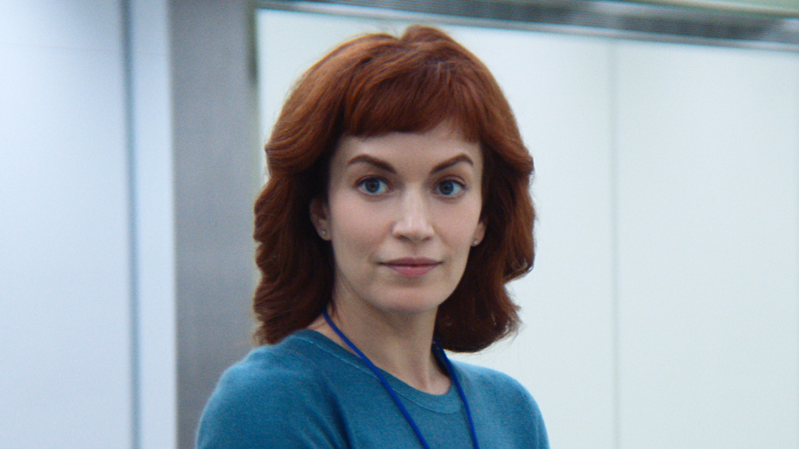
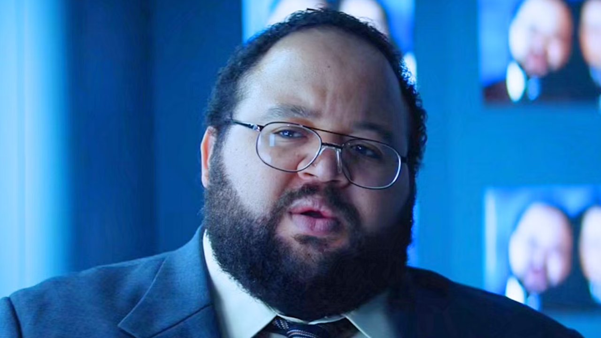

Mark

Mark is a dedicated worker in the MDR department, known for his efficiency and ability to mediate conflicts among his colleagues. He has a quirky habit of organizing his desk meticulously, often rearranging items to create a sense of order.
Irving

Irving is a loyal and enthusiastic team member who thrives on supporting his colleagues and fostering a positive atmosphere. He has a penchant for sharing motivational quotes and often brings in homemade snacks to boost team morale.
Helly
Helly is initially bewildered by her role in the MDR department but is determined to understand her tasks and challenge the status quo. She has a rebellious streak, often doodling on her notepad during meetings and making sarcast comments to lighten the mood.
Dylan
Dylan G. exemplifies the core values of Lumon Industries through his outstanding performance, positive demeanor, and commitment to teamwork. His contributions not only elevate the quality of work in the MDR department but also create a supportive and enjoyable workplace for all.